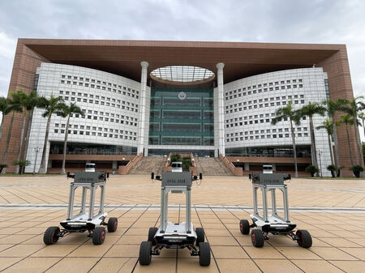

个人简介 About Me
我是中山大学系统科学与工程学院副教授、硕士生导师，2024 年入选中国科协青年人才托举工程。
我的研究聚焦于无人机、机器人与多机器人系统，主要关注复杂环境下的协同定位、感知、自主决策和运动控制。研究工作连接算法、系统与真实实验平台，面向空地异构无人集群的实际应用。
此前，我于北京理工大学获得航空宇航科学与技术博士学位，并先后在多伦多大学和以色列理工学院开展访问研究。2020 年加入中山大学。
招生信息
欢迎对机器人、无人系统和多机器人协同研究感兴趣的同学联系我。
查看详情 →
研究方向 Research Interests
- Multi-robot SLAM多机器人协同定位与建图、分布式状态估计、退化环境鲁棒定位
- Autonomous Systems自主无人系统建模、控制与感知
- Motion Planning复杂场景路径规划、强化学习与多智能体协同决策
- Air-ground Swarms空地异构无人集群系统集成与综合应用
精选论文 Selected Publications
* 通讯作者-
2025
Heterogeneous LiDAR Dataset for Benchmarking Robust Localization in Diverse Degenerate Scenarios
Z. Chen, Y. Qi*, D. Feng, X. Zhuang, H. Chen et al.
International Journal of Robotics Research (IJRR) -
2025
CaRtGS: Computational Alignment for Real-Time Gaussian Splatting SLAM
D. Feng, Z. Chen, Y. Yin, S. Zhong, Y. Qi*, H. Chen*
IEEE Robotics and Automation Letters (RA-L) -
2024
S3E: A Multi-Robot Multimodal Dataset for Collaborative SLAM
D. Feng, Y. Qi*, S. Zhong, Z. Chen, Q. Chen, H. Chen et al.
IEEE RA-L · Best Paper Award Honorable Mention
开源项目 Projects & Datasets
教育与工作经历 Experience
中山大学
系统科学与工程学院，副教授
中山大学
系统科学与工程学院，特聘副研究员
中山大学
系统科学与工程学院，博士后
多伦多大学
联合培养博士 / 访问学者
北京理工大学
航空宇航科学与技术，博士
北京理工大学
飞行器设计与工程，学士
招生信息 Join Us
招收计算机科学与技术学术型硕士、电子信息专业型硕士。希望你对机器人研究保持好奇，具备良好的编程基础，熟悉 C++ / Python，并了解 Linux、Git、ROS 或 CMake 等机器人系统开发工具。
我们重视团队协作、主动分享和扎实的工程实践。有意向的同学可通过邮件联系，并附个人简历和成绩单。
qiyh8@mail.sysu.edu.cn